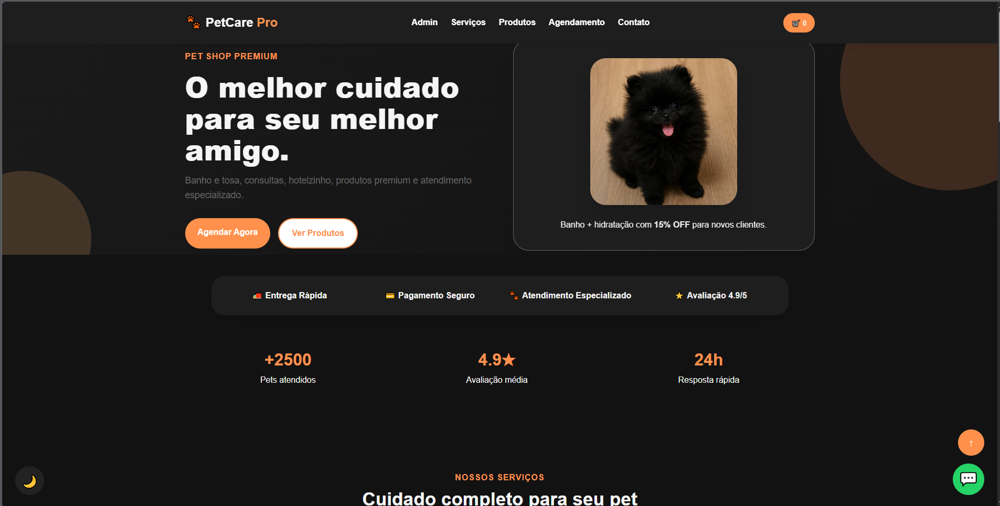

Pet Shop
Site desenvolvido para um Pet Shop com foco em um design moderno, navegação intuitiva e layout totalmente responsivo. O projeto foi construído utilizando HTML, CSS e JavaScript, proporcionando uma experiência agradável em diferentes dispositivos e reforçando minhas habilidades na criação de interfaces modernas.
Ver Projetos